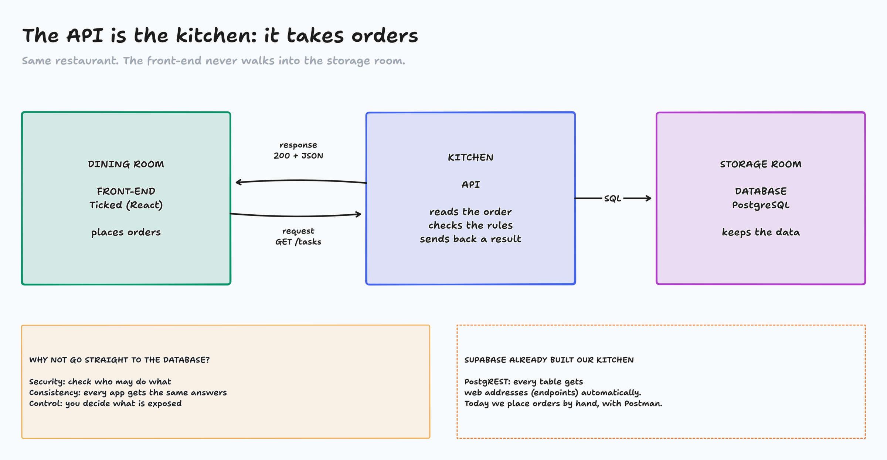
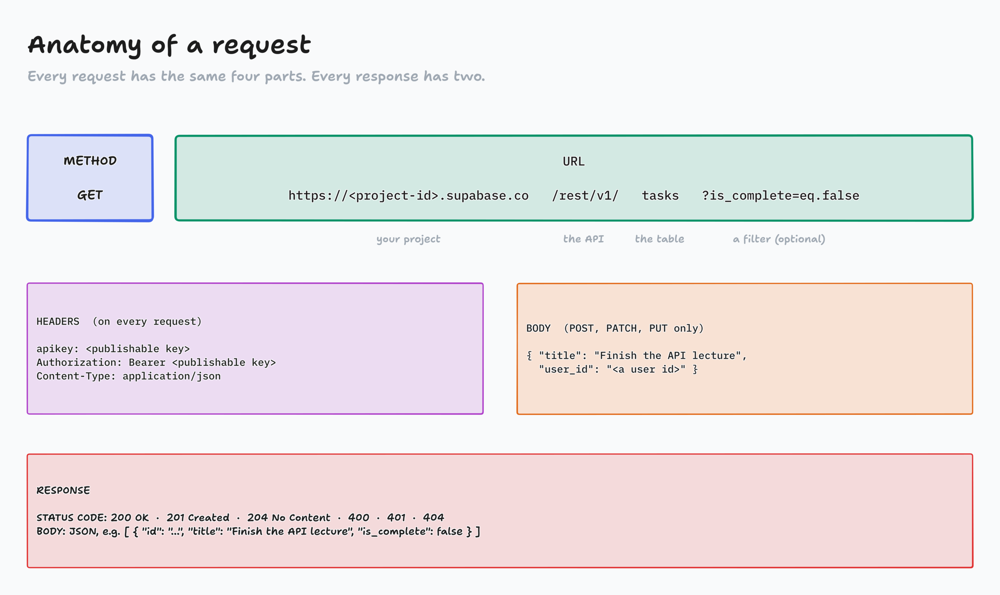
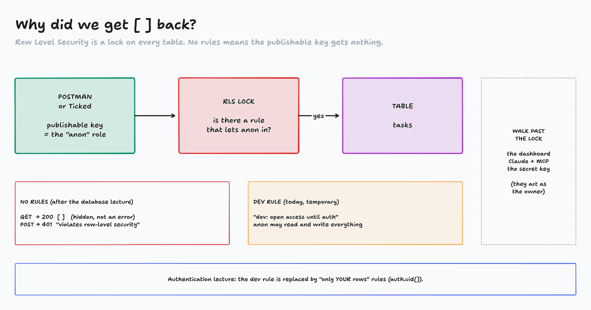

Building Applications · Full-Stack Apps · Part 1 of 2
RESTful APIs
The bridge between Ticked and its database. Today we cross it by hand, with Postman.
Before class (demo-kit/RUNBOOK.md): ~/demos/ticked is as the database lecture left it (app + supabase/). The task-manager Supabase project has its 5 tables, RLS on, no policies, no rows . Postman open and signed in. Tabs: Supabase dashboard, Postman, this deck.
Press T to start the clock. Target: 40 minutes.
from the database lecture
"Last time we ended here. Front-end ✓, database ✓, and a dashed box in the middle. Today we learn what's in that box and use it by hand. Next lecture, Ticked uses it."
Today: what an API is, the 4 CRUD requests, then live in Postman against our real database.

diagrams/FS1-01-the-api.tldr
Same restaurant as before. The API is the kitchen: it takes an order (a request ), checks it against the rules, gets what it needs from storage, and sends back a response .
Why not let the browser talk to the database directly? Point at the yellow box: security, consistency, control.
Point at the orange box: "Who builds the kitchen? For us, Supabase already did. It's called PostgREST: every table we made got its own web address. So today we don't build an API, we use one."
REST: four habits of a well-behaved API
1 · URLs name things Plural nouns: /users, /tasks. Not verbs like /getTasks.
2 · Methods say what to do GET, POST, PATCH, PUT, DELETE.
3 · JSON goes back and forth Looks like a JavaScript object.
4 · Stateless The server remembers nothing. Every request carries everything it needs, like the key.
API = how two programs talk. REST = a set of conventions for doing it over HTTP.
REST is Representational State Transfer . It's a set of conventions, not a library. An API that follows them is "RESTful".
Stateless matters today: that's why every Postman request will carry the key in its headers.
CRUD: four things every app does to data
HTTP method SQL Body? Success C reatePOST INSERT yes, JSON 201 Created R eadGET SELECT no: filters go in the URL 200 OK U pdatePATCH / PUT UPDATE yes, JSON 204 No Content D eleteDELETE DELETE no: the URL says which 204 No Content
PATCH changes only the fields you send. PUT replaces the whole row. If in doubt, PATCH.
DELETE without a filter could empty the table. Always say which row.
Read across each row: "Create is a POST, which is an INSERT in SQL, it needs a body, and a good answer is 201."
PUT vs PATCH: "PUT a task with only a title, and the other columns get wiped or reset. PATCH just the title, and the rest stays." PUT is for "the user edited every field in a form."
Supabase has protection against an unfiltered DELETE, but don't rely on it.
Quick-fire: what request does Ticked need?
Open the Tasks page
Tick off "Buy groceries"
Create a project called "Gym"
Show only the tasks that aren't done
Delete one task
In chat: the method and the URL . Bonus: does it need a body?
The only activity today, about 3 minutes. Open Ticked (front-end only) (also on the homepage) and do each action in the app as you ask it. Wait 10 seconds for chat, then give the answer:
GET /tasks (no body)PATCH /tasks?id=eq.<id>, body { "is_complete": true }POST /projects, body { "name": "Gym", "user_id": "…" }GET /tasks?is_complete=eq.false (the filter is in the URL)DELETE /tasks?id=eq.<id> (no body, the URL says which)
Point out the Supabase filter style: column=eq.value. eq means equals.

diagrams/FS1-02-anatomy.tldr
Walk it left to right: method, then the URL in four parts. Then the three headers Supabase wants on every request, and the body for writes.
The publishable key is safe in a browser: it can only do what the RLS rules allow. The secret key skips all rules: never in Postman screenshots, never in front-end code.
Response: a status code (the first clue when debugging) and a JSON body.
Live: set up Postman
Supabase → Integrations → Data API : copy the Project URL (keep /rest/v1, drop the last /)
Project Settings → API Keys : copy the Publishable key Postman → new collection Ticked API → Variables : base_url, publishable_key
New request → Headers → Bulk Edit → paste →
apikey:{{publishable_key}}
Authorization:Bearer {{publishable_key}}
Content-Type:application/json
URL: {{base_url}}/users → Send
** LIVE, about 4 minutes. ** In Supabase, show the Data API page, including its Docs link: "Supabase wrote the manual for our API from our tables." Copy the Project URL into base_url. It ends in /rest/v1/: keep /rest/v1, delete only the trailing /. Then every request is {{base_url}}/<table>. Getting PGRST125 Invalid path? /rest/v1 is in the URL twice.
Variables: "Don't paste the key into every request. Save it once." Hit Save on the variables or Postman won't use them.
Bulk Edit takes all three headers at once. Then Save the request as "Read users". Every new request: Duplicate this one, so the headers come along.
Menu names move between Supabase releases. The Connect button in the top bar also shows the URL and key.

diagrams/FS1-03-rls.tldr
** LIVE first: ** Send GET /users. It says 200 and []. Duplicate it, make it POST /users with body { "name": "Demo User", "email": "demo@ticked.app" }. It says 401 : "new row violates row-level security policy".
"200 but empty, and 401 even though the key is right. Read the message, not just the number." Then show this diagram.
"In the database lecture we turned Row Level Security on and wrote no rules. The publishable key is the anon role, and anon has no rule, so the lock stays shut. The dashboard and Claude's MCP act as the owner: that's why they saw everything."
"We have no logins yet, so we add a temporary rule: anon may do everything. In the authentication lecture it becomes 'only your own rows'."
Live: Claude adds a temporary rule
# terminal: Claude in ~/demos/ticked/supabase (the Supabase MCP lives there)
My tables have Row Level Security on with no policies, so my publishable key gets [] back
in Postman and can't add rows. We don't have logins yet.
Using the Supabase MCP, add TEMPORARY development policies that let the anon role read and
write all five tables (users, projects, tasks, tags, task_tags). Name each one
"dev: open access until auth". Show me the SQL first and wait for my approval.Read the SQL before you approve. Then check: Authentication → Policies.
** LIVE, about 3 minutes. ** cd ~/demos/ticked/supabase && claude. Paste the prompt (it's in demo-kit/prompts.md). Claude shows SQL like create policy "dev: open access until auth" on public.tasks for all to anon using (true) with check (true);
Read one line out loud: "for all = select, insert, update, delete. to anon = the publishable key. using (true) = every row." Approve the MCP call.
Dashboard: Authentication → Policies shows one rule per table (on some versions it's under Database → Policies ).
Backup: paste demo-kit/dev-policies.sql into the SQL Editor and Run.
Live: CRUD on our real database
Request URL after {{base_url}}/ Body Expect POST users + header Prefer:return=representation{"name":"Demo User","email":"demo@ticked.app"}201 + the row POST tasks (same Prefer header){"title":"Finish the API lecture","user_id":"…"}201 + the row GET tasks?is_complete=eq.falsenone 200 + [ … ] PATCH tasks?id=eq.<task id>{"is_complete":true}204 DELETE tasks?id=eq.<task id>none 204
After each one: the status code, the body, and the Table Editor.
** LIVE, about 8 minutes. ** Keep the Table Editor open in a second window and refresh it after each request: "Postman changed a real row."
POST users : without Prefer:return=representation you get 201 and an empty body. Add the header to see the new row and its id. Copy the id. Keep this user: next lecture, Ticked uses it as its demo user.POST tasks : paste the user's id as user_id. Ask: "What happens without user_id?" Try it: 400 , not-null. Copy the task's id.GET with the filter. Then PATCH : 204, nothing to send back. GET again: is_complete is true.DELETE the task: 204. Leave the user.
Short on time? Do POST users, POST tasks, PATCH, and go to status codes.
Backup: import demo-kit/Ticked-API.postman_collection.json (File → Import) and set its two variables.
Status codes: your first clue
Code Means We saw it when… 200 OK worked, here's data GET (even []) 201 Created new row made POST 204 No Content worked, nothing to send PATCH, DELETE 400 Bad Request your request is wrong missing user_id, bad JSON 401 Unauthorized not allowed bad key, or RLS with the publishable key 403 Forbidden logged in, still not allowed RLS, once we have logins 404 Not Found no such address try /taks 500 Server Error the server broke not your request: check the logs
** LIVE, 1 minute: ** break two things on purpose. Change one letter of the key: 401 "Invalid API key". Change the URL to /taks: 404 .
2xx = it worked. 4xx = your request has a problem. 5xx = the server has a problem.
401 vs 403: with the publishable key and no login, Supabase says 401 when RLS refuses. After the authentication lecture, a logged-in user who breaks a rule gets 403.
Today Postman sent the requests. Next, Ticked does.
Same URLs, same headers, same JSON. We move them into a service layer, and Ticked finally remembers.
Recap: the API is the bridge. CRUD = POST, GET, PATCH/PUT, DELETE. The status code is the first clue. RLS decides what the publishable key may see.
Homework, Part I
Priority 1, Send Requests: every CRUD request in Postman, against your Netflix Clone's database first, then your own app's.Priority 2, FreeCodeCamp: 50 steps of the Python certification
Send Requests
Add the dev rules first, if RLS is on
Save each request in a collection
Note every status code you get
Which endpoints are tricky for your app? Write them down for Claude.
The steps are on the class site. "The notes you write about your endpoints are context for Claude next lecture."
Postman: free account at postman.com, desktop app or web.